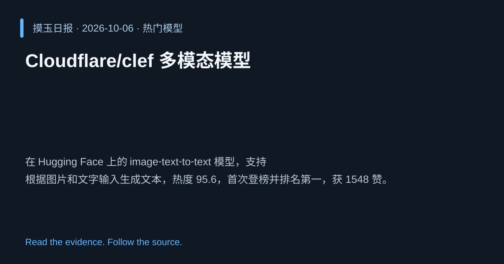

2026-10-06 · Asia/Shanghai · 热门模型 · #1
Cloudflare/clef 多模态模型
Cloudflare/clef
在 Hugging Face 上的 image‑text‑to‑text 模型，支持根据图片和文字输入生成文本，热度 95.6，首次登榜并排名第一，获 1548 赞。
为什么值得关注
多模态生成需求增长，模型受欢迎度最高，展示 Cloudflare 在跨模态 AI 的竞争力。
- 支持图片+文本联合输入生成自然语言输出
- 热度评分 95.6/100，榜单首位
- 首次登榜，获 1548 点赞，显示社区高度关注

热度 95.6 / 100；排名与评分保留该期记录。